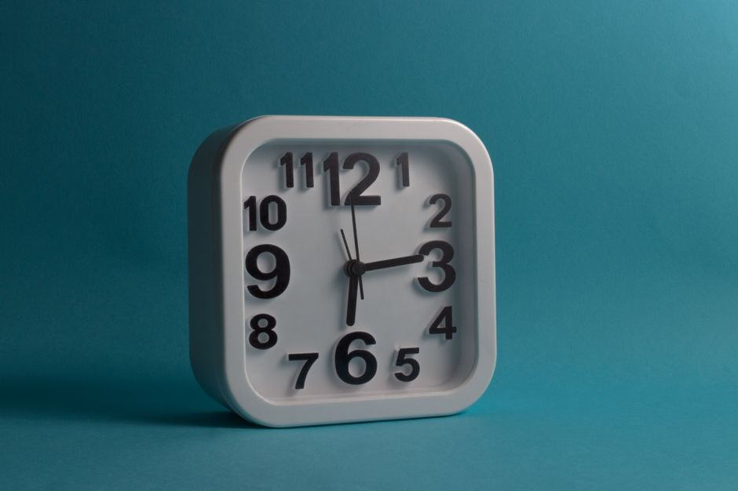
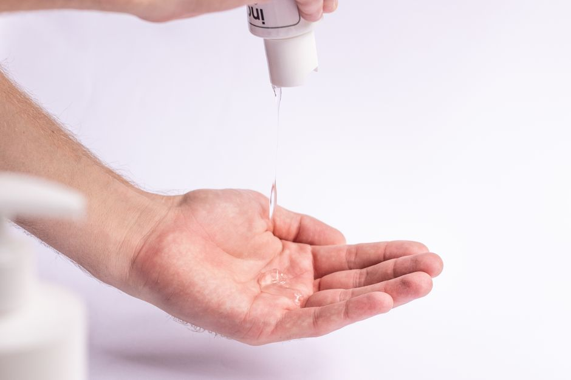
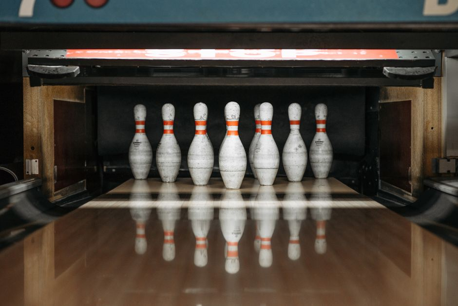
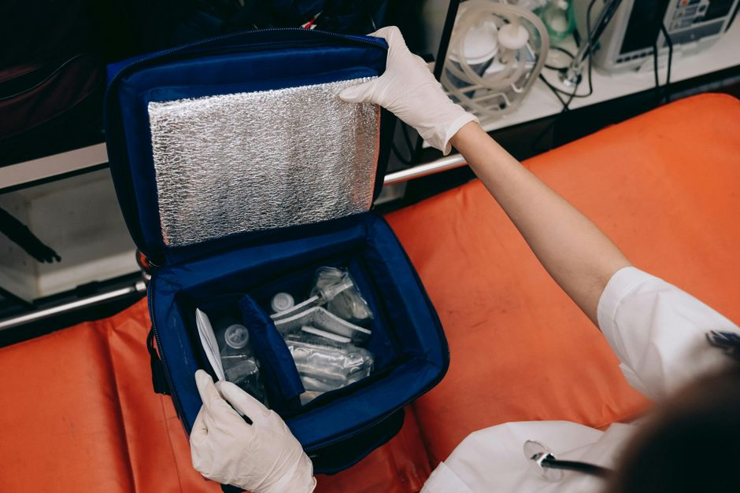
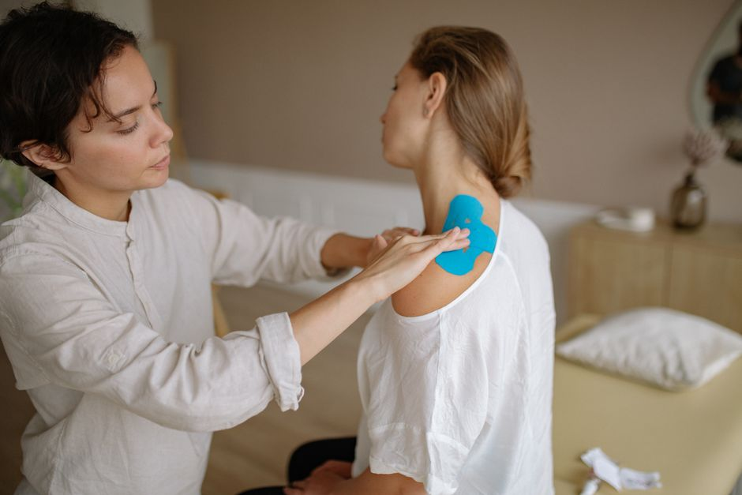

Parches de electrodos tens/ems con forma de mariposa para cuello y hombros
Parches de electrodos TENS/EMS con forma de mariposa. Alivio de dolor en cuello y hombros. Diseño ergonómico y discreto. ¡Compra ahora!
0 vistas

Electrodos tens/ems de forma rectangular alargada con conexión snap para espalda y zones grandes
Electrodos rectangulares alargados con conexión snap para cubrir grandes zonas. Ideales para espalda y áreas extensas. Compatibles con dispositivos TENS/EMS.
0 vistas
Electrodos tens/ems de gel seco autoadhesivos cuadrados para uso facial y áreas sensibles
Electrodos cuadrados de gel seco autoadhesivos para terapia TENS/EMS facial. Cómodos, portátiles y diseñados para zonas delicadas. Compra ahora.
0 vistas

Gel conductor reutilizable para electrodos tens/ems en tubo dispensador
Gel conductor para electrodos TENS/EMS. Mejora el contacto y transmisión de energía. Reutilizable en tubo dispensador. ¡Compra ahora!
0 vistas
Electroestimulador tens/ems inalámbrico con control remoto bluetooth y pantalla led para smartphone
Electroestimulador TENS/EMS inalámbrico con control Bluetooth desde smartphone. Pantalla LED, sin cables. Compra online ahora.
0 vistas

Electroestimulador tens/ems portátil de batería con modo de masaje shiatsu y pulso variable
Electroestimulador TENS/EMS portátil con batería, masaje shiatsu y pulso variable. Terapia y bienestar en tu bolsillo. ¡Compra ahora!
0 vistas
Electroestimulador tens/ems de doble canal con pantalla digital y baterías recargables
Electroestimulador TENS/EMS portátil con pantalla digital, doble canal y batería recargable. Ajusta intensidad y frecuencia para alivio del dolor en casa.
0 vistas
Correa de sujeción ajustable para electrodos tens/ems con velcro
Correas ajustables con velcro para fijar electrodos TENS/EMS de forma segura y cómoda. Mantén tus electrodos en posición durante el tratamiento.
0 vistas

Electrodos tens/ems autoadhesivos de carbono reutilizables paquete de recambio
Electrodos autoadhesivos de carbono reutilizables para dispositivos TENS/EMS. Recambios de calidad para electroestimulación. ¡Compra ahora!
0 vistas

Funda de transporte acolchada para electroestimulador tens/ems
Funda acolchada de transporte para electroestimuladores TENS/EMS. Protege tu dispositivo de golpes y daños. Ideal para viajes y almacenamiento seguro.
0 vistas

Parche tens desechable preformado de espuma hipoalergénica para electroestimulación
Parches TENS desechables con espuma hipoalergénica. Electroestimulación cómoda y práctica sin geles adicionales. ¡Compra ahora!
0 vistas

Cinta adhesiva para electrodos tens reutilizable hypoalergénica
Cinta adhesiva hipoalergénica para electrodos TENS reutilizable. Máxima adherencia sin irritación ni residuos. Cuida tu piel.
0 vistas

Gel conductor reutilizable para electroestimuladores y tens
Gel conductor reutilizable para electroestimuladores y TENS. Mejora la transmisión de impulsos eléctricos. Efectivo y cómodo. ¡Compra ahora!
0 vistas

Electrodos de repuesto adhesivos de silicona para electroestimulador muscular
Electrodos de repuesto adhesivos de silicona para tu electroestimulador. Mantén tu dispositivo como nuevo. Excelente adherencia y durabilidad garantizada.
0 vistas
Electroestimulador muscular portátil de batería recargable para entrenamiento y recuperación
Electroestimulador muscular portátil con batería recargable. Entrena y recuperate en cualquier lugar. Impulsos eléctricos controlados para máximo rendimiento.
0 vistas